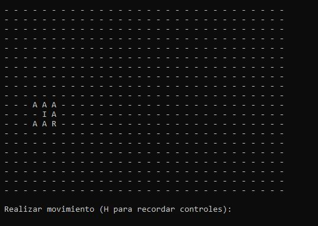

Mega Cat Studios | Unity Developer (Mar 2025 - Present)
AAA production title for PlayStation. Contributed to gameplay and UI systems in a large-scale production environment with cross-discipline teams.
My contribution: Implemented and maintained UI features, built reusable UI components and custom editor tooling for designers, developed scalable UI architecture, and performed bug fixing, optimization, and profiling.
"He was able to parse through a larger code-base and adapt to its design sensibilities, plus is able to both independently work on the tasks he was given while also not being afraid to ask critical questions that solidified task goals. Despite the project we were on being tied to game development, he also was able to flex his previous job and coding experiences outside the game industry to create some nice quality of life tools to help speed project development tasks up!
Hybrid AI system where a visual Decision Tree drives FSM state transitions. 7 FSM states (Attack, Block, Evade, Measure, Pursue, Heal, Idle) resolved at runtime via reflection. Custom DT nodes with hysteresis, weighted probability, and distance-proportional randomization for emergent behavior.
Full flocking system (Craig Reynolds) with role-specific extensions: MeleeEncircle for formation-based surrounding, RangedSpread with 8-direction scoring for tactical repositioning. Steering behaviors: Seek, Pursuit, Evade, ObstacleAvoidance.
Third-person player controller with combo attack system, parry window (0.2s) with counter-attacks, lock-on targeting (Cinemachine integration), 3 skill slots with cooldowns, and a charge ultimate with physics-based pushback.
My contribution: Full ownership of AI architecture (Decision Trees + FSM + flocking), player controller, event bus system, custom FSM Editor Window, and TypeSelector property drawer. The AI system was designed to be fully editable by game designers through ScriptableObjects and visual editors.
CHALLENGE Enemy near attack-range boundary caused AI to oscillate between Pursue and Attack every frame — jittery, unrealistic behavior.
SOLUTION Hysteresis in IsPlayerInRange: uses a tight threshold to exit pursuit, but a wider threshold (attackRadius + pursuitThreshold) to enter it. Once committed, the enemy stays committed.
CHALLENGE Running OverlapSphere neighbor queries for every boid every frame is O(n²) and generates GC pressure.
SOLUTION Temporal caching (recalculates every 0.15s, returns cached waypoint on intermediate frames) + OverlapSphereNonAlloc with a pre-allocated buffer — eliminates per-frame GC allocation entirely.
CHALLENGE Multiple melee enemies encircling the player could claim the same angular slot, causing stacking collisions.
SOLUTION Deterministic slot assignment: all melee boids sorted by GetHashCode() (stable per-instance), each gets 360° / totalMelee × index. No central coordinator needed — emergent formation from local data.
RPG where players design combat strategies through a modular spell system (single, multi, AOE, chain cast) built with ScriptableObjects + custom editor. Strategic combat based on casting times, ranges and spell synergies. Dynamic spell customization UI and state-based enemy AI.
Object Pool, Service Locator, Flyweight, Command, Abstract Factory, State Machine, Strategy, Wrapper.
// KEY TECHNICAL CHALLENGES
CHALLENGE Each spell type (Single, AOE, Chain) needs different config fields — exposing all on every ScriptableObject clutters the inspector and confuses designers.
SOLUTION[SerializeReference] polymorphic field + custom PropertyDrawer that conditionally renders only the relevant fields per selected strategy. Designers see a dropdown and only what they need.
CHALLENGE Spells are shared ScriptableObjects (Flyweight), but each equipped instance needs its own runtime level state — you can't store mutable data on a SO.
SOLUTIONSpellInstanceWrapper implements ISpells, wraps the shared SO reference, and adds instanceLevel. All consuming code works against the interface — no coupling to the wrapper.
CHALLENGE Enemy spawning caused GC allocation spikes. Factory also needed to spawn by category (random, strongest, weakest).
SOLUTION Abstract Factory + ObjectPool<Enemy> using a LinkedList. Enemies self-register back into the pool via their OnDeath event — zero allocation on spawn when pool is warm.
Mobile action game with 5 distinct enemy types (homing meteorites, lasers, bombers with mines, black hole gravity wells), dynamic difficulty scaling (spawn rates halve when planet recovers), and a color-matching collection mechanic across 3 mechanically distinct levels. Built with floating joystick, Android haptics, and Google Play integration.
My contribution: All gameplay programming — 5 enemy behaviors, spawner with dynamic difficulty, player controller (nitro, teleport, color matching), level progression, save system, and audio management. Art by Martín Morbelli.
// KEY TECHNICAL CHALLENGES
CHALLENGE After collecting a pixel, re-rolling the same color would make the next target trivially adjacent — removing tension.
SOLUTION On collection, the collected color is removed from the candidate pool before the random roll. The player always gets a different color, forcing repositioning every pickup.
CHALLENGE A naive teleport (negating world position) breaks if the map isn't centered at world origin.
SOLUTIONInverseTransformPoint converts the player's world position into the map's local space, negates X/Y to mirror through the map's actual center, then TransformPoint converts back. Works regardless of map placement.
Download APK (Android)
// Unsigned build — enable "install from unknown sources" on your device.
// TIER_3: sys.run("BearsAgainstTime.exe")

Bears Against Time
~1.2K LOC · PURE C · FIUBA 2020
Terminal Adventure Game — C (FIUBA, 2020)
Procedurally-generated rescue game where the player picks between 3 bears — each with asymmetric collision rules and unique abilities (Polar ignores rocks, Pardo halves tree penalty, Panda unlocks GPS after 30s lost) — and races a 120s timer across a 20×30 forest with 431 obstacles, 70 tools and three distinct light sources.
My contribution: solo author. Designed the procedural map generator with collision-free placement, asymmetric character abilities via conditional dispatch, multi-source fog-of-war (directional raycast, 3×3 aura, Manhattan-distance radius) and a real-time game loop with input validation.
// KEY TECHNICAL CHALLENGES
CHALLENGE Spawn 431 obstacles + 70 tools across a 20×30 grid with zero overlaps — a naive retry loop could spin forever near saturation.
SOLUTIONinicializar_mapa() allocates a temporary tablero_aux[20][30] matrix as a spatial index; validar_y_asignar_posicion_obstaculos() re-randomizes only until a VACIO cell is hit. O(1) occupancy check instead of linear scan over 500+ entities per placement.
CHALLENGE Three bears with different collision costs (Polar jumps rocks, Pardo loses half time on trees) without duplicating the whole movement pipeline.
SOLUTION Single colision_obs_personaje() switches on tipo_personaje (I/P/G). Backpack contents are bear-specific too — llenar_mochila() reads the same enum and tops up +2 velas / +2 bengalas / +5 linterna moves. One dispatch point instead of three parallel code paths.
CHALLENGE Three light sources with totally different illumination shapes — directional ray (linterna), 3×3 aura (vela), Manhattan radius (bengala) — each draining its own counter.
SOLUTIONactualizar_visibilidad() dispatches on tool type and reads movimientos_restantes per instance. Linterna checks ultimo_movimiento (W/A/S/D) to project a ray; iluminado_por_vela() unrolls 8 adjacent cells; bengala stores a random center and uses distancia_manhattan() ≤ 3.
CHALLENGE Removing picked-up items from the world without reallocation or leaving holes in the obstacle array.
SOLUTIONborrar_elemento_mapa() swap-and-pop — copies the tail element into the removed slot and decrements the count. O(1) deletion on a flat array-of-structs, no malloc/free churn during gameplay.